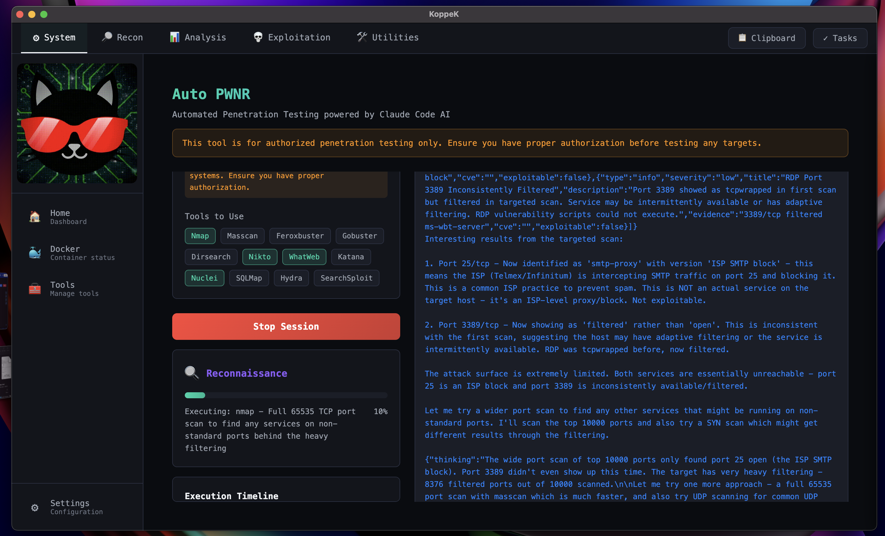

KoppeK
Your offensive security battle station.
Automation, context, and AI — under your control.
KoppeK is a workflow layer for real engagements: run repeatable tasks, capture evidence automatically, and use AI to triage noisy output into actionable next steps — while you stay the operator.
Why KoppeK exists
Pentesting isn't hard because of tools — it's hard because of context switching. Terminals, scripts, notes, screenshots, payloads, chat logs… and then you still have to report.
Less chaos
Scope, runs, notes, and artifacts in one engagement workspace.
More rigor
Reproducible runs and an audit trail you can defend.
Faster decisions
AI turns noisy output into hypotheses and next steps you can verify.
LLM-Driven Automation
When you're ready to scale, let the AI take the wheel — with proper authorization and full operator oversight.

Targeted Automation
Select which tools the AI can use and define scope boundaries before starting.
AI Reasoning Visible
Watch the LLM's thinking process in real-time — full transparency on every decision.
Authorization Required
Exploitation requires explicit opt-in. Built for authorized testing only.
Supported LLM Providers
Bring your own API keys. Your prompts, your control.
Auto-Generated Assessment Report
Every session produces a complete markdown report with findings, evidence, and AI reasoning — ready for your deliverables.
# Auto PWNR Security Assessment Report
Target: [REDACTED].xxx.xxx.xxx
Duration: 6 minutes
Status: COMPLETE
## Executive Summary
| Severity | Count |
|----------|-------|
| Critical | 0 |
| High | 0 |
| Medium | 1 |
| Low | 1 |
## AI Reasoning Log
🤖 Assistant:
"Initial scan reveals two open ports. Port 3389/tcp shows as
'tcpwrapped' - TCP handshake completed but service closed
connection. Could be host-based firewall or TCP wrappers.
I need more information. Let me run a more aggressive scan
with additional scripts targeting these specific ports..."
✅ nmap - Targeted script scan on ports 25, 3389
Command: nmap -sV -sC --script=rdp-vuln-ms12-020 -p 25,3389
🤖 Assistant:
"Port 3389 now showing as 'filtered' rather than 'open'.
This is inconsistent with the first scan — the host may have
adaptive filtering. Let me try a wider port scan to find
services on non-standard ports..."
✅ nmap - Wide SYN scan of top 10000 ports
✅ nmap - Full 65535 TCP port scan
✅ sqlmap - SQL injection on /api/users
## Findings
### 🔴 SQL Injection - Authentication Bypass
Severity: CRITICAL
Endpoint: POST /api/login
Payload: ' OR '1'='1' --
🤖 Exploitation:
"SQLi confirmed. Extracted 3 admin credentials from users table.
Recommending password reset and parameterized queries."See KoppeK in Action
Real workflows. Real evidence. Real operator control.
Alpha Testing Was a Success
We ran our initial Alpha with a select group of testers, and the results exceeded expectations. The feedback has been invaluable - we've gathered insights, squashed bugs, and refined the experience.
What Alpha Testers Are Saying
Private Beta Countdown
🚀 Private Beta is coming.
We listened. We improved. Now we're ready for the next phase.
March 27, 2026
Be among the first to experience the next evolution of offensive security tooling.
Sign Up for Private BetaWhat KoppeK Actually Does
KoppeK isn't a list of tools. It's a workflow layer that keeps your assessment fast, organized, and reproducible.
You stay the operator. KoppeK keeps you fast, organized, and consistent.
From target to report—without the chaos
A clean loop you can repeat across engagements, with everything captured along the way.
Define Scope
Targets, rules of engagement, credentials, constraints
Run Discovery
Structured, repeatable profiles with live output
Triage
AI summary + your verification steps
Validate
Evidence capture + reproducible steps
Report & Re-test
Draft findings, remediation notes, replayable checks
Built for real engagements
Privacy-conscious by design: bring your own keys, keep artifacts in your environment, and stay in control.
Privacy & Control
- Local-first workflow where possible
- Bring-your-own API keys and models
- Clear artifact storage paths
- Exportable history and evidence
Built for Authorized Testing
- Operator-in-the-loop confirmations
- Scope reminders and guardrails
- Designed for professional engagements
- Not "one-click hacking"
FAQ
Is this "one-click hacking"?
No. KoppeK is operator-in-the-loop: it organizes workflows, captures evidence, and helps you triage faster — but you stay in control.
Do I need a powerful machine?
No. Tool execution runs in a container. AI can be remote or local depending on your setup and preferences.
Where does my data go?
Artifacts stay in your environment. If you enable AI, you bring your own keys and control what gets sent.